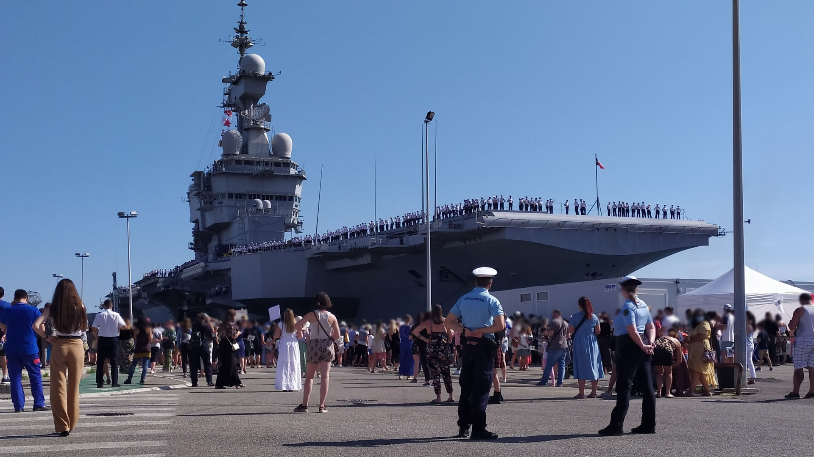

Brigade de gendarmerie maritime de Toulon

Missions :
La mission principale de la Brigade de gendarmerie maritime de Toulon est la protection de l'emprise de la base de défense de Toulon : Elle assure : - La sécurité de la base, - La police de la route, - La police militaire, - La police administratif, - Le recueil des différentes plaintes, - L'encadrement des événements très proche de la base navale (manifestations...).
Moyens :
- Mobilité : Véhicules : - 10 Véhicules. - Divers : - Informatique (ordinateurs, logiciels...), - Matériels de brigade (Radar de route, éthylotests...).
Effectifs :
- 42 personnels : 1 Officier, 32 Sous-officier, 9 Gendarmes adjoints volontaires (GAV). - Police Judiciaire : OPJ : 15 personnels. Certains des personnels sont Pilote d'Embarcations Gendarmerie (PEG)